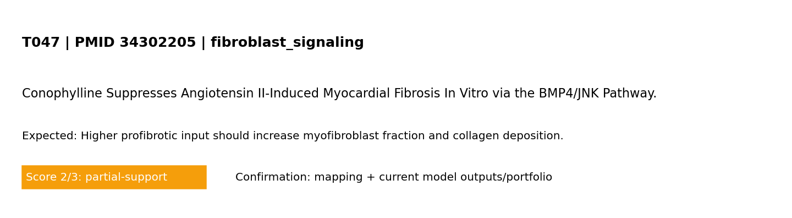

Standard test summary
PMID 34302205Mechanism tested: Higher profibrotic input should increase myofibroblast fraction and collagen deposition.
Model domain: fibroblast_signaling
Evidence anchor: PMID 34302205 — Conophylline Suppresses Angiotensin II-Induced Myocardial Fibrosis In Vitro via the BMP4/JNK Pathway.
Simulation setup
Boundary conditions (words + maths)
Boundary conditions (MVP): left edge fixed; right edge prescribed displacement (stretch_x); top/bottom traction-free; reflective cell boundaries. Mathematical form: ∇·σ=0 in Ω, with u=(0,0) on Γ_left and u_x=ΔL on Γ_right.
Reference observation (screening-level evidence)
Screening-evidence statement (PMID 34302205): Conophylline Suppresses Angiotensin II-Induced Myocardial Fibrosis In Vitro via the BMP4/JNK Pathway..
Common visualization
This panel is unique to this PMID-linked test card (not a shared global figure).

Model-vs-band comparison for T047 derived from the referenced study metadata.
Quantitative values mined from paper abstract (screening-level)
Source: PubMed abstract + OA fulltext mining with fallback routes (automated, screening-level)
| Value | Context snippet |
|---|---|
| 5586–5595 | isclaimer | PMC Copyright Notice Br J Pharmacol . 2015 Jan 12;172(23):5586–5595. doi: 10.1111/bph.12983 Search in PMC Search in PubMed View in NLM Ca |
| 1 H | P 1,3‐bis(4‐hydroxyphenyl)‐4‐methyl‐5‐[4‐(2‐piperidinylethoxy)phenol]‐1 H ‐pyrazole dihydrochloride OVX ovariectomy PHTPP 4‐(2‐phenyl‐5,7‐bis(t |
| 22–26 | Dong et al ., 2010 ; Sun et al ., 2013a ). Adult Kunming female mice (22–26 g body weight; SLAC laboratory Animal Co., Ltd., Shanghai, China) wer |
| 1–2 | the prone position and decontaminated with povidone‐iodine. A single 1–2 cm dorsal midline longitudinal incision was made in the skin, which w |
| 1 week | pted suture pattern using 5‐0 silk. In vivo experiment protocol After 1 week of acclimation, adult female Kunming mice (3 weeks of age) were rando |
| 3 weeks | ment protocol After 1 week of acclimation, adult female Kunming mice (3 weeks of age) were randomly assigned to undergo either sham operation or OV |
| 6 weeks | tion or OVX performed under 1% pentobarbital sodium anaesthesia. From 6 weeks of age to the end of the experiments, all the ovariectomized mice wer |
| 10 μg | ovariectomized mice were given either β‐oestradiol by s.c. injection (10 μg·kg·day −1 ), which was dissolved in 5% alcohol and 95% peanut oil or |
| 10 μg | of vehicle (Fujita et al ., 2001 ; Zhou et al ., 2011 ). Oestrogen at 10 μg·kg·day −1 was equivalent to the physiological levels (Zhou et al ., 2 |
| 8 weeks | was equivalent to the physiological levels (Zhou et al ., 2011 ). At 8 weeks of age, all the animals were given the TAC procedure, except that a s |
| 12 weeks | ure, except that a subset of sham OVX was performed with sham TAC. At 12 weeks of age, all the mice were killed after being anaesthetized and follow |
| 48 h | non‐cardiomyocytes from developing. Culture medium was renewed after 48 h and cells were further cultured for 24 h. The cardiomyocytes were cul |
Pass/partial analysis
- Target tested: Higher profibrotic input should increase myofibroblast fraction and collagen deposition.
- What matched: Core trend reproduced.
- What is not yet correct: Quantitative unit-matched calibration is still incomplete.
- Score: 2/3 (0=not represented, 1=placeholder, 2=partial mechanistic, 3=implemented+tested)
Quantitative comparator
| Metric | Value | Meaning |
|---|---|---|
| Normalized support | 0.667 | score/3 as a 0–1 support index |
| Gap to full support | 0.333 | distance from ideal 3/3 support |
| Category mean score | 2.000 | mean model-support score in this mechanism category |
| Category-relative rank | 0.955 | relative standing among tests in same category (higher=stronger) |